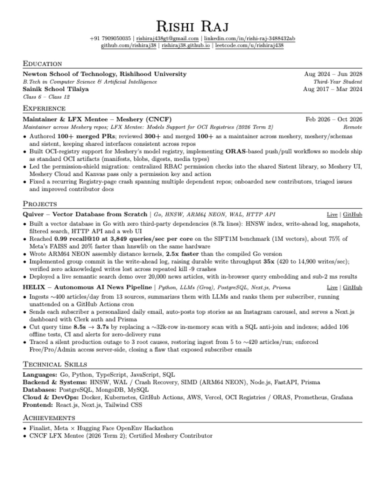
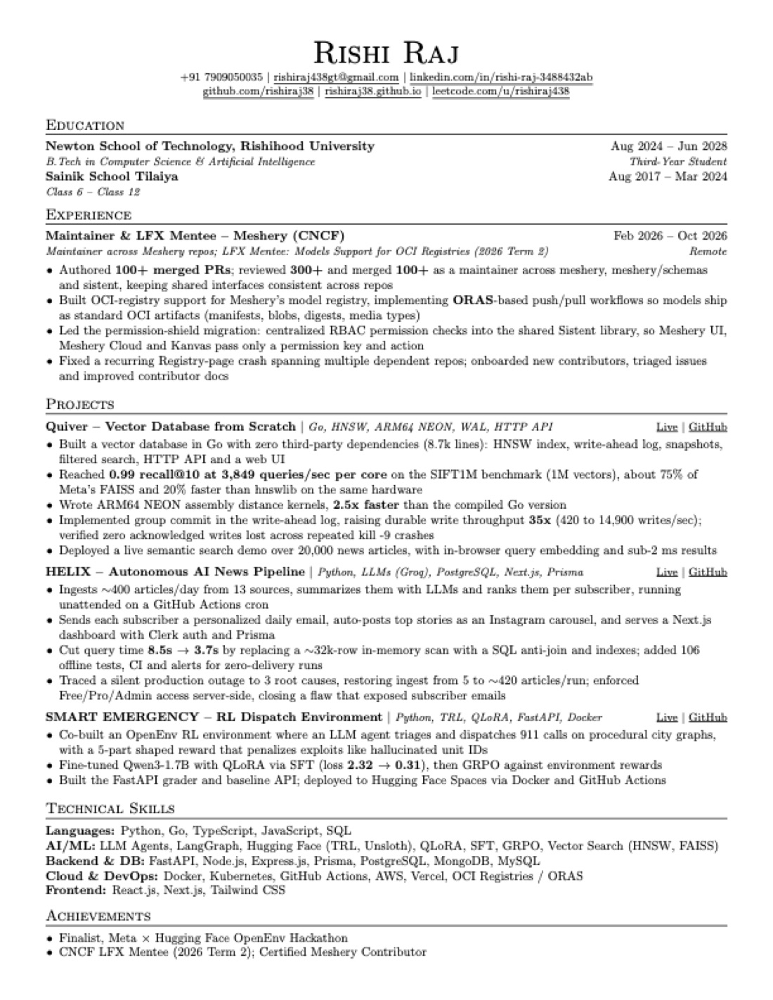

ISoftware EngineeringBackend, databases, systems

Hi, I'm Rishi Raj, a third-year B.Tech student in Computer Science and AI at Newton School of Technology, Rishihood University. I like to know how something works underneath before I build on top of it, so I end up writing a lot of things from scratch: a vector database in Go, a news pipeline that runs on its own, and an environment where LLM agents learn by trial and error.
Most of 2026 went into open source. I was a maintainer and LFX mentee at Meshery, a CNCF project, and these days I'm sending fixes to C2SI, Open Food Facts and Kolibri. I'm looking for software engineering and AI/ML roles where I can keep working this way.
Meshery (CNCF)
Meshery (CNCF)
No posts yet. My first one will appear here.
Projects
Each one is live, and each one has numbers I measured myself.
A vector database written in Go with no third-party dependencies. It has an HNSW index, a write-ahead log, snapshots, filtered search, an HTTP API and a web UI.
A news pipeline that runs on its own. Every day it reads about 400 articles from 13 sources, summarises them with an LLM, ranks them for each reader and sends a personal email.
A reinforcement-learning environment where an LLM agent triages and dispatches 911 calls across generated city maps. Its reward punishes shortcuts such as inventing unit IDs.
A mock-interview coach that runs practice interviews and gives you feedback on each answer. It works with any model provider, keeps each interview's token use small, and gives new users three free interviews.
Open source · Meshery (CNCF) and beyond
Maintainer & LFX Mentee · Meshery (CNCF) · Feb – Oct 2026
Counted from GitHub on 21 Oct 2026. Gold links are still open for review.
Put every permission check in Meshery UI, Meshery Cloud and Kanvas behind one shared component, driven by keys generated from the schemas.
Built the permission shield in Sistent. An overlay, a provider and hooks that any component can use with only a permission key and an action.
Moved Meshery UI onto it. Replaced the old CAN() checks across navigation, component authorisations, telemetry and connection buttons.
Generated permission constants from the schemas. Keys now come from meshery/schemas instead of hand-kept lists, and the docs table is built from the same source.
Made switching organisations permission-aware. The switcher lists only the organisations you can act in, and clears stale keys when you switch.
Wrote it down. A component guide, a permission-key guide and a blog post on the migration.
My LFX mentorship project: ship Meshery models as standard OCI artifacts.
Push and pull models with ORAS. Models are stored with OCI manifests, blobs, digests and media types, so any OCI registry can host them.
Day-to-day work on the shared design system and the app that uses it.
Moved Meshery off direct MUI imports. The app shell, theme wrapper and root primitives now come from Sistent.
Filled gaps in Sistent's icons and tests. New icons, consistent exports, automated icon tests, and Jest moved to SWC.
Added design relationship evaluation. An Evaluate button in the UI and the matching endpoint in the schemas.
Small changes across many repositories so builds and CI keep passing.
Upgraded the Go toolchain to 1.26.4 in six repos.
Fixed Hugo builds on six academy sites.
Repaired broken CI workflows.
Since September 2026, in other open-source organisations.
C2SI, 13 merged. A Hough line operator, affine transforms and pipeline export in imagelab; clearer validation errors and a loss-function picker in tensormap; dark-mode charts in dataloom.
Open Food Facts, 1 merged and 5 open. A country filter and 30-day summary for the prices stats API, dark mode for knowledge panels, and autocomplete for traceability codes.
Learning Equality, 3 merged. Accessibility and per-user settings fixes in Kolibri, plus a test migration to Vue Testing Library.
Single fixes in large projects. An error check in CPython's string interning, two minikube fixes, an eBPF profiler extension for OpenTelemetry, and fixes in Submitty and FOSSASIA.
Waiting for review. New features for MetaCall, and a nil-check fix for Uber's nilaway.
CV
Both share my Meshery work and core projects. One puts backend and systems first; the other puts machine learning and LLM agents first.
Updated October 2026

